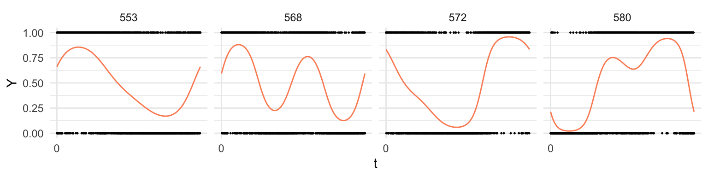
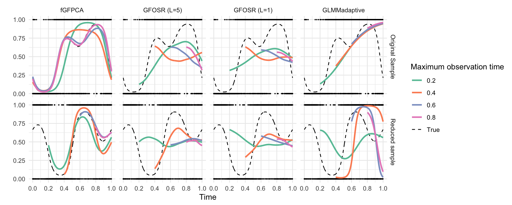
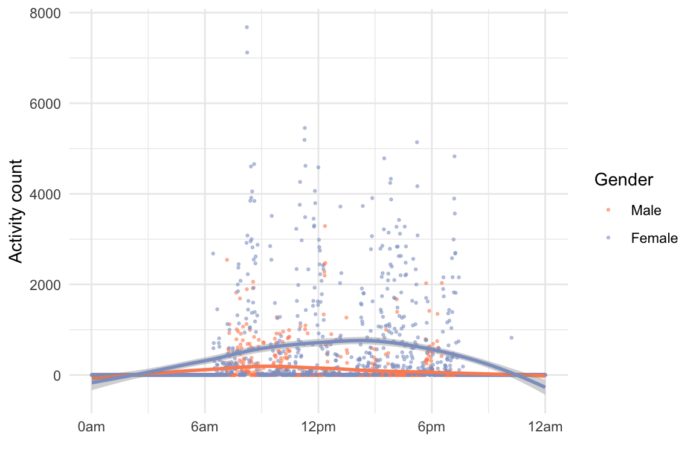
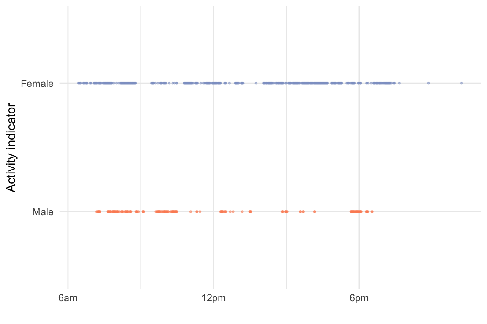
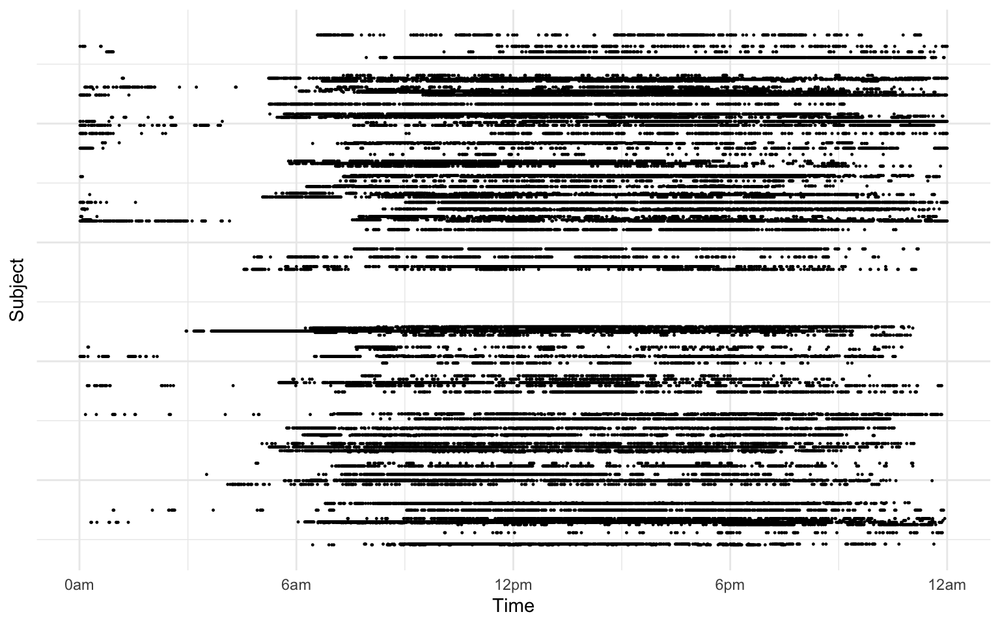

load(here("Data/SimOutput_fGFPCA.RData"))
load(here("Data/SimOutput_GLMMadaptive.RData"))
load(here("Data/SimOutput_GFOSR_L1.RData"))
pred_list_gfosr_l1 <- pred_list_gfofr
t_vec_gfosr_l1 <- t_vec_gfofr
rm(pred_list_gfofr, t_vec_gfofr)
load(here("Data/SimOutput_GFOSR_L5.RData"))
pred_list_gfosr_l5 <- pred_list_gfofr
t_vec_gfosr_l5 <- t_vec_gfofr
rm(pred_list_gfofr, t_vec_gfofr)load(here("Data/SubSimOutput_GLMMadaptive.RData"))
load(here("Data/SubSimOutput_fGFPCA.RData"))
pred_subset_adglmm <- pred_subset_adglmm[!num_probs]
fit_time_subset_adglmm <- fit_time_subset_adglmm[!num_probs]
pred_time_subset_adglmm <- pred_time_subset_adglmm[!num_probs]
load(here("Data/SubSimOutput_GFOSR_L1.RData"))
pred_subset_gfosr_l1 <- pred_list_gfofr_subset
t_subset_gfosr_l1 <- t_vec_gfofr_subset
rm(pred_list_gfofr_subset, t_vec_gfofr_subset)
load(here("Data/SubSimOutput_GFOSR_L5.RData"))
pred_subset_gfosr_l5 <- pred_list_gfofr_subset
t_subset_gfosr_l5 <- t_vec_gfofr_subset
rm(pred_list_gfofr_subset, t_vec_gfofr_subset)pred_list_all[[1]] %>% filter(id %in% sample(501: 600, 4)) %>%
mutate(eta_i = plogis(eta_i)) %>%
ggplot()+
geom_point(aes(x=t, y=Y), size = 0.2)+
geom_line(aes(x=t, y=eta_i, col = "eta_i"), show.legend = F)+
facet_grid(cols=vars(id))+
scale_color_manual(values = "#FC8D62")+
scale_x_continuous(breaks = seq(0, 1000, by = 200))+
labs(x="t")
sim1 <- bind_rows(
pred_list_all[[1]] %>% filter(id == 580) %>%
mutate(method="fGFPCA"),
pred_list_ref[[1]] %>% filter(id == 580) %>%
mutate(method = "GLMMadaptive"),
pred_list_gfosr_l1[[1]] %>% filter(id == 580) %>%
mutate(method = "GFOSR (L=1)") %>%
rename(pred0.2=pred_w1, pred0.4=pred_w2, pred0.6=pred_w3, pred0.8=pred_w4),
pred_list_gfosr_l5[[1]] %>% filter(id == 580) %>%
mutate(method = "GFOSR (L=5)") %>%
rename(pred0.2=pred_w1, pred0.4=pred_w2, pred0.6=pred_w3, pred0.8=pred_w4)
) %>% mutate_at(vars(eta_i, pred0.2, pred0.4, pred0.6, pred0.8),
.funs = function(x){exp(x)/(1+exp(x))}) %>%
mutate(method=factor(method,
levels = c("fGFPCA", "GFOSR (L=5)", "GFOSR (L=1)","GLMMadaptive")))
sim2 <- bind_rows(
pred_subset_fGFPCA[[1]] %>% filter(id == 189) %>% mutate(method="fGFPCA"),
pred_subset_gfosr_l5[[1]] %>% filter(id == 189) %>% mutate(method = "GFOSR (L=5)") %>%
rename(pred0.2=pred_w1, pred0.4=pred_w2, pred0.6=pred_w3, pred0.8=pred_w4),
pred_subset_gfosr_l1[[1]] %>% filter(id == 189) %>% mutate(method = "GFOSR (L=1)") %>%
rename(pred0.2=pred_w1, pred0.4=pred_w2, pred0.6=pred_w3, pred0.8=pred_w4),
pred_subset_adglmm[[1]] %>% filter(id == 189) %>% mutate(method = "GLMMadaptive")) %>%
mutate_at(vars(eta_i, pred0.2, pred0.4, pred0.6, pred0.8),
.funs = function(x){exp(x)/(1+exp(x))}) %>%
mutate(method=factor(method,
levels = c("fGFPCA", "GFOSR (L=5)", "GFOSR (L=1)","GLMMadaptive")))bind_rows(sim1 %>% mutate(sim = "Original Sample"), sim2 %>% mutate(sim = "Reduced sample")) %>%
ggplot()+
geom_point(aes(x=t, y=Y), size = 0.2)+
geom_line(aes(x=t, y=eta_i, col = "True"), linetype = "dashed")+
geom_line(aes(x=t, y=pred0.2, col = "0.2"), na.rm=T, linewidth = 1.0)+
geom_line(aes(x=t, y=pred0.4, col = "0.4"), na.rm=T, linewidth = 1.0)+
geom_line(aes(x=t, y=pred0.6, col = "0.6"), na.rm=T, linewidth = 1.0)+
geom_line(aes(x=t, y=pred0.8, col = "0.8"), na.rm=T, linewidth = 1.0)+
facet_grid(rows = vars(sim), cols = vars(method))+
labs(col = "Maximum observation time", x = "Time", y="")+
scale_x_continuous(breaks = seq(0, 1, by = 0.2))+
theme(legend.position = "right")+
scale_color_manual(values = cols)
# binary
df_nhanes <- read_rds(here("Data/nhanes_bi.rds"))
# continuous
df_nhanes_cont <- read_rds(here("Data/NHANES_AC_processed.rds"))
df_exp <- df_nhanes_cont %>%
filter(SEQN == 21910 | SEQN == 29599) %>%
filter(WEEKDAY==5) %>%
group_by(Gender) %>%
sample_n(1) %>%
select(SEQN, Gender, starts_with("MIN")) %>%
pivot_longer(starts_with("MIN")) %>%
mutate(minute = as.numeric(gsub("MIN", "", name))) %>%
mutate(value_bi = value > 100)df_exp %>%
ggplot(aes(x=minute, y=value, col=Gender))+
geom_point(size = 0.5, alpha = 0.5)+
geom_smooth(method = "loess", formula = y ~ x, show.legend = F)+
# scale_y_continuous(transform = "log")+
scale_color_manual(values = c("#FC8D62", "#8DA0CB"))+
scale_x_continuous(breaks = seq(0, 1440, by = 360),
labels = c("0am", "6am", "12pm", "6pm", "12am"))+
labs(y = "Activity count", x="")
df_exp %>%
filter(value_bi) %>%
ggplot(aes(x=minute, y=Gender, col=Gender))+
geom_point(size = 0.5, alpha = 0.5, show.legend = F)+
# scale_y_continuous(transform = "log")+
scale_color_manual(values = c("#FC8D62", "#8DA0CB"))+
scale_x_continuous(breaks = seq(0, 1440, by = 360),
labels = c("0am", "6am", "12pm", "6pm", "12am"))+
labs(y = "Activity indicator", x="")
df_nhanes %>%
select(SEQN, Z, sind) %>%
filter(SEQN %in% sample(unique(df_nhanes$SEQN), size = 100)) %>%
filter(Z == 1) %>%
ggplot()+
geom_point(aes(x=sind, y=SEQN), size = 0.2)+
labs(x = "")+
labs(x = "Time", y="Subject")+
scale_x_continuous(breaks = seq(0, 1440, by = 360),
labels = c("0am", "6am", "12pm", "6pm", "12am"))+
theme(axis.text.y = element_blank())
# df_nhanes <- read_rds(here("Data/nhanes_bi.rds"))
load(here("Data/ApplOutput_fGFPCA.RData"))
load(here("Data/ApplOutput_GLMMadaptive.RData"))
load(here("Data/Appl_GFOSR_L5.RData"))
load(here("Data/Appl_GFOSR_L1.RData"))
pred_appl_gfosr_l1 <- pred_appl_gfosr_l1 %>%
rename(pred360=pred_w1, pred720=pred_w2, pred1080=pred_w3)
pred_appl_gfosr_l5 <- pred_appl_gfosr_l5 %>%
rename(pred360=pred_w1, pred720=pred_w2, pred1080=pred_w3)# redefine color scale
cols <- cols[1:3]
names(cols) <- c("6am", "12pm", "6pm")
# selct four subjects
plot_id <- sort(c(64198, 80517))
# figure
bind_rows(
pred_nhanes_fgfpca %>% filter(id %in% plot_id) %>% mutate(method="fGFPCA"),
pred_appl_gfosr_l5 %>% filter(id %in% plot_id) %>% mutate(method = "GFOSR (L=5)"),
pred_appl_gfosr_l1 %>% filter(id %in% plot_id) %>% mutate(method = "GFOSR (L=1)"),
pred_nhanes_adglmm %>% filter(id %in% plot_id) %>% mutate(method = "GLMMadaptive")) %>%
mutate_at(vars(pred360, pred720, pred1080),
.funs = function(x){exp(x)/(1+exp(x))}) %>%
mutate(method=factor(method,
levels = c("fGFPCA", "GFOSR (L=5)", "GFOSR (L=1)","GLMMadaptive"))) %>%
ggplot()+
geom_point(aes(x=sind, y=Y), size = 0.2)+
geom_line(aes(x=sind, y=pred360, col = "6am"), linewidth=1, na.rm=T)+
geom_line(aes(x=sind, y=pred720, col = "12pm"), linewidth=1, na.rm=T)+
geom_line(aes(x=sind, y=pred1080, col = "6pm"), linewidth=1, na.rm=T)+
facet_grid(rows = vars(id), cols = vars(method))+
labs(col = "Maximum observation time", x = "Time", y="")+
scale_x_continuous(breaks = seq(0, 1440, by = 360),
labels = c("0am", "6am", "12pm", "6pm", "12am"))+
theme(legend.position = "right", axis.text.x = element_text(size = 7))+
scale_color_manual(values = cols)